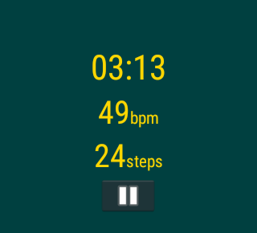
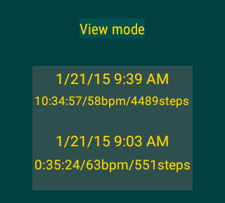
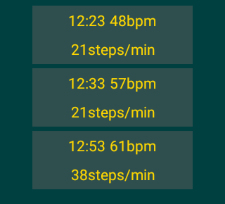
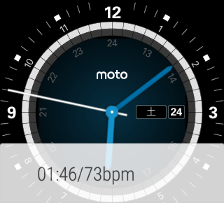

Gambarumeter is an Android Wear application that tracks your heart rates, running distance and stepcount.
Smartphones with Android 4.3 or newer is required to install this app.
But this app works standalone. It's not necessary to carry smartphones.
Usage
Main view
Main view is shown when launched.
If you tap the button or double-tap somewhere on the screen, the app starts tracking.
The app stops tracking if you tap or double-tap.
You have to turn on GPS system setting.
Distance is shown "-.--" at first. It turns to "0.00" when the device acquired satellite signals.
History view
 Your can view your workout history by swiping left.
History view has view mode and edit mode.
On view mode, tap a list item to see the detail of it.
On edit mode, tap a list item to delete it.
Mode changes by tapping "View mode" or "Edit mode"
Setting view
Setting view is shown when you swipe left on history view.
Notification
Ongoing notification appears on the watch face while working out. Tap it to see main view.
Voice action
Voice commands are available if the device is connected with smartphones.
"Start running" or "Start workout" to start the app.
Don't say "Stop running" or "Stop workout". Your workout data will be cleared.